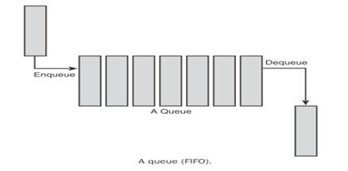
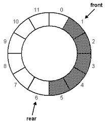

02 큐(Queue)
1. 큐란?
큐란 선입선출(First in first out; FIFO), 즉 먼저 들어왔던 데이터일수록 먼저 추출되는 형태로 데이터를 저장하고 추출하는 데이터 구조입니다.
선형 구조로 된 큐와 원형 구조로 된 큐가 존재합니다.
2. 선형 큐(Linear Queue)

선형 큐는 그림과 같은 형태의 구조로서 순회하지 않는 구조를 가집니다.
3. 용어 설명
|
용어 |
설명 |
|---|---|
|
전단(Front) |
가장 처음에 저장된 데이터 또는 앞으로 추출될 데이터를 가리킵니다. 큐가 비어 있을 경우 앞으로 처음 저장될 데이터의 위치를 가리킵니다. |
|
후단(Rear) |
가장 마지막에 저장된 데이터의 다음 칸을 가리킴으로써 이제 저장될 데이터의 위치를 가리킵니다. 큐가 비어 있을 경우 전단과 같은 곳을 가리키게 됩니다. |
|
입력(Enqueue) |
데이터를 저장합니다. 전단은 이동하지 않으며 후단은 한 칸 뒤로 이동하여 다시 다음에 저장될 데이터의 위치를 가리키게 됩니다. |
|
추출(Dequeue) |
데이터를 추출합니다. 후단은 이동하지 않으면 전단은 한 칸 뒤로 이동하여 다시 앞으로 추출될 데이터를 가리키게 됩니다. |
※ 이 프로그램에 있어서의 참고 사항
보통 선형 큐는 오버 플로우(Overflow)가 존재하지 않습니다. 원하는 만큼 배열이나 저장 공간을 크게 두고 시작할 수 있기 때문입니다. 그러나 이 프로그램에서는 제한된 화면에서 표현하였기 때문에 한 번에 최대 담을 수 있는 데이터의 양은 13개로 제한되어 있어 모두 채운 상태에서 데이터 입력을 시도할 경우 오버 플로우 메시지가 나타납니다. 그리고 이 상태에서는 추출만 가능하고, 결국 끝까지 추출해내었을 때에는 추출과 입력 모두를 할 수 없게 됩니다(실제 큐의 크기를 작게 잡을 경우 이러한 문제가 발생하곤 합니다). 이러한 문제를 해결하기 위하여 데이터 추출을 시도할 시 원래는 전단이 한 칸 이동하고 끝나야 하나, 전단이 이동함과 동시에 큐 데이터 전체가 왼쪽(데이터가 추출되는 방향)으로 이동하는 효과를 보여 줌으로써 13개의 저장 가능한 큐 데이터 영역을 유지할 수 있도록 표현하였습니다.
3. 원형 큐(Circular Queue)

※ 특징
원형 큐는 그림과 같은 형태의 구조로서 순회하는 구조를 가집니다. 선형 큐에서 사용하는 용어와 완전히 동일한 용어를 사용하며, 후단이 전단의 바로 전 칸(영역)에 도달할 때까지만 데이터를 저장할 수 있습니다. 즉, 전단의 바로 앞 한 칸(영역)만을 남겨둔 상태에서 다른 칸(영역)에 데이터를 모두 저장해 놓았다면, 이 큐는 가득 찬 것으로 인식합니다. 이 프로그램에서는 이러한 상태에서 입력을 시도하였을 때 "Overflow!"라는 경고 문구를 띄우도록 하였습니다.
스택과 마찬가지로 두 가지 큐 모두 사용자 임의의 데이터 입력을 받지 않고, 일련의 순서에 따른 숫자를 표시하는 것으로 표현하도록 하였습니다.
4. 예제
선형 큐와 원형 큐에 대해 아래와 같은 시행을 하려고 할 때, 선형 큐와 원형 큐가 각각 어떠한 형태를 띠게 되는지 그림으로 나타내시오. 이때 작업의 오른쪽 괄호 안에 있는 숫자가 입력하는 숫자이다.
(1)
|
입력(5) - 입력(13) - 입력(1) - 추출 - 추출 - 입력(20) - 추출 - 입력(79) - 입력(11) - 입력(8) - 추출 - 추출 - 입력(69) |
(2)
|
입력(5) - 추출 - 입력(22) - 추출 - 입력(7) - 입력(8) - 입력(19) - 입력(23) - 추출 - 입력(11) - 입력(1) - 입력(88) - 추출 - 추출 - 입력(53) - 입력(46) - 입력(99) - 추출 - 입력(20) - 추출 - 추출 - 입력(11) - 입력(20) - 추출 - 입력(80) - 추출 - 추출 - 입력(43) - 입력(71) - 추출 - 입력(35) - 추출 - 추출 - 입력(16) |
단, 선형 큐의 경우 Overflow가 발생할 수 있다. 만약 문제에서 Overflow가 발생할 시, 이 프로그램을 이용해서 작업을 수행할 때 어느 작업에서 Overflow가 나겠는가?